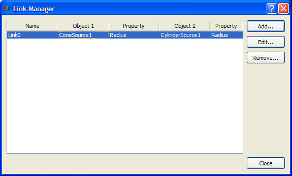
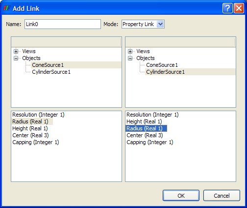
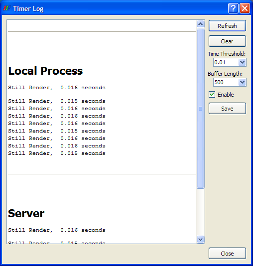

The Tools menu provides access to functionality related to custom filters, linking, plugins, testing, and debugging.
Group one or more filters and their properties into a reusable macro with a name you assign. Through a series of dialogs, you may choose which properties of the filter(s) to expose. When you finish, the new filter is listed in the Alphabetical submenu of the Filters menu with the name you assigned it.
This dialog box lists any custom filters currently loaded into ParaView. From it, you may import custom filters previously saved to a file, export one or more of the ones in the list to a file, or remove any custom filters listed.
From the dialog that appears, you can create property, object, or camera links. You can also edit or remove existing links.

A property link causes a single property of two different objects to have the same value. For example, you could link the center of a sphere object with that of a cone object. When the center of one of these objects changes, the center of the other will be updated accordingly.

An object link causes all of the properties of a given object to be linked to all of the properties of another object. This only makes sense if you have two instances of the same object.
Camera links can also be created using Manage Links; Add Camera Link (see below) is a shortcut.
A camera link connects the camera (viewpoint) of two different 3D views so that you are viewing both scenes from the same 3D point and looking in the same direction. This menu option creates a camera link from the active view (highlighted in red) to the one you select (by clicking it after you select the menu option). This functionality is also available by right-clicking on a 3D view. In the Link Manager (see above), a camera link is listed as an object link between two render views.
From this dialog, you may load server-side or client-side plugins previously created. Server-side plugins create VTK objects on the server(s); client-side plugins add new user interface elements.
This menu option displays a list of all the Qt widgets being used. This is useful in debugging and testing for making sure all the widgets have reasonable names.
This entry allows you to record a ParaView test as either XML or Python. You will first be asked to enter a file name and choose the file type. Then a dialog box will appear listing the full path to the test. It also has a Stop Recording button. Perform whatever actions you wish to have recorded in the test as you normally would in ParaView. When you are finished, click Stop Recording. A test file will be saved using the path and file name you specified.
Typically this option is used after the Play Test option (see below). It captures a 300x300 pixel image of the selected view and saves it with the file name you specify. This is useful for creating a valid image for regression testing.
When you select this item, you choose a file containing either an XML or Python test -- typically one you recorded previously with the Record Test option in this menu. When you load the file, ParaView plays through the test contained in it.
When you record a screenshot for a test in ParaView, the image resolution is 300 x 300. If you want to use mouse interactions in the 3D view in the test, you may want to first use this menu option to force the rendering window in the 3D view to be 300 x 300. This is because ParaView stores mouse interactions in normalized coordinates, and if the interactions are captured in a 300 x 300 window, they will be exactly the same during playback of the test as they were during test recording. If you do not use this option, the results of the interactions may be a little different than what you expect.
Choosing this menu option causes a timer log dialog box to be displayed as shown below. It keeps track of the amount of time various operations take to complete. If you leave this dialog open while ParaView is running, you may click the Refresh button to show the most up-to-date timing information. The Clear button removes all the information currently in the timer log. You may set the Timer Threshold to indicate how often to record new timer events. The Buffer Length indicates how many events to keep in the log; earlier entries will be removed first. Additionally, you may save the contents of the timer log to a text file using the Save button.

Any errors or warnings ParaView produces are stown in the Output Window. This window appears when an error or warning occurs, but this menu entry allows you to view the list of messages any time you wish to see it. At the bottom of the output window is a Clear button to delete its contents. There is also a Close button which simply closes the dialog.
This menu item displays a dialog for entering Python commands to create and/or control most aspects of the ParaView application including readers, sources, filters, writers, representations, views, etc.